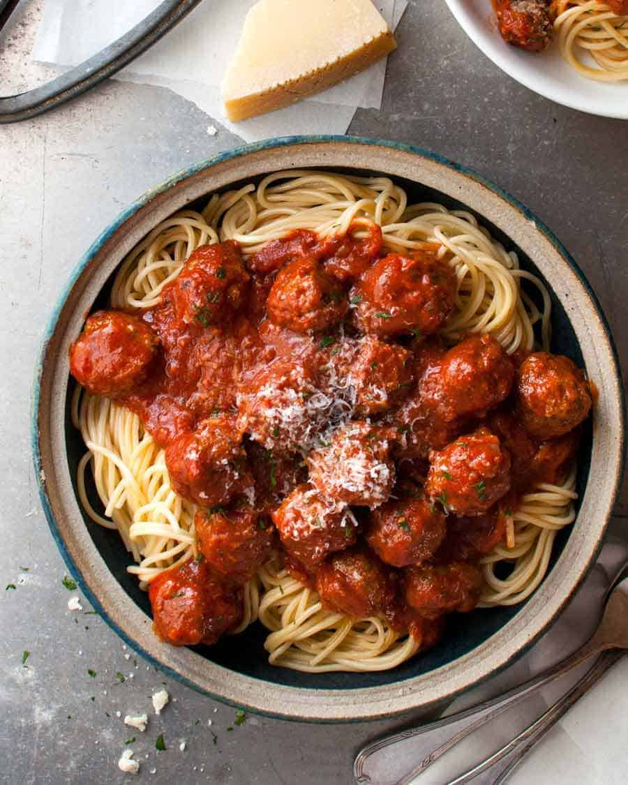

Italian Meatballs

What You're Making
These are my idea of "perfect" meatballs. I make them extra soft and juicy by using bread instead of breadcrumbs, and the grated onion is my secret tip for adding extra flavour into this. Plus, no need to sauté diced onion before mixing it in! Served with a rich tomato sauce made extra tasty by cooking it in the same pan that the meatballs are browned in.
What You'll Need
Meatballs
- 1 lightly packed cup of diced white sandwich bread
- 1 small onion
- 14 oz / 400 g ground beef
- 3 oz / 100g ground pork
- 1 egg
- 1/4 cup fresh parsley
- 2 garlic cloves
- 1/4 cup Parmigiano-Reggiano
- 3/4 tsp salt
- 1/4 tsp black pepper
Cooking Meatballs & Sauce
- 2.5 tbsp olive oil
- 2 garlic cloves
- 3/4 cup onion
- 24 oz / 700 g tomato passata
- 1/2 cup water
- 1 tsp red pepper flakes
- 3 tsp dried Italian herb mix
- 1 tsp salt
- Black pepper